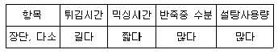
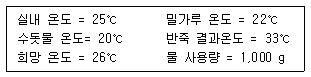
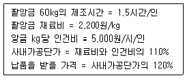

제과기능장 (2004-04-04 기출문제)
1과목: 임의 구분
1. 스펀지 케이크를 만들 때 전란을 20㎏ 감소하고 물과 밀가루를 더 넣으려면 물은 얼마 정도를 넣어야 하는가?
- 10㎏
- 15㎏
- 20㎏
- 25㎏
(정답률: 알수없음)

2. 베이킹파우더 5%를 사용하는 옐로레이어 케이크 배합율에 천연코코아 20%를 사용하는 데블스푸드 케이크를 제조하려 할 때 실제 사용해야 하는 베이킹파우더의 양은?
- 0.8%
- 1.4%
- 3.6%
- 5.8%
(정답률: 알수없음)
3. 팬 용적과 반죽무게에 관하여 설명한 것 중 틀린 것은?
- 파운드 케이크 반죽 1g당 팬 용적은 2.40cm3
- 레이어 케이크 반죽 1g당 팬 용적은 2.96cm3
- 엔젤푸드 케이크 반죽 1g당 팬 용적은 4.71cm3
- 스펀지 케이크 반죽 1g당 팬 용적은 4.08cm3
(정답률: 알수없음)
4. 다음의 제품 중 양질의 결과를 얻기 위해 반죽의 pH가 가장 높아야(알칼리성) 하는 것은?
- 엔젤푸드 케이크
- 스펀지 케이크
- 데블스푸드 케이크
- 파운드 케이크
(정답률: 알수없음)
5. 다음은 도넛의 어떤 결점을 점검하기 위하여 조사한 것이다. 주된 결점은?

- 도넛의 흡유가 과도한 결점
- 도넛의 흡유가 적은 결점
- 도넛의 팽창이 과도한 결점
- 도넛의 형태가 균일하지 않는 결점
(정답률: 알수없음)
6. 파운드 케이크를 만드는데 밀가루와 설탕 사용량이 일정하다면 계란과 다른 재료의 연결 관계가 맞는 것은?
- 계란증가 ⇒ 소금 감소
- 계란증가 ⇒ 쇼트닝 감소
- 계란증가 ⇒ 베이킹 파우더 감소
- 계란증가 ⇒ 우유 증가
(정답률: 알수없음)
7. 화이트 레이어 케이크에서 주석산 크림을 사용하는 이유가 아닌 것은?
- 흰자를 강력하게 한다.
- 흰자의 알칼리를 중화한다.
- 완제품의 색상을 희게 한다.
- 오븐에서의 팽창을 크게 한다.
(정답률: 50%)
8. 엔젤푸드 케이크를 산 사전처리법으로 만드는 공정 중 가장 틀리는 항목은?
- 흰자에 소금과 주석산 크림을 넣어 젖은 피크(wet peak)까지 거품을 올린다.
- 사용할 설탕의 약 2/3를 투입하고 중간 피크(medium peak)까지 거품을 올린다.
- 나머지 설탕과 체질한 밀가루를 넣고 가볍게 혼합한다.
- 기름칠을 균일하게 한 팬에 짜는 주머니를 사용하여 분할한다.
(정답률: 알수없음)
9. 거품형 케이크의 종류가 아닌 것은?
- 스펀지 케이크(Sponge cake)
- 파운드 케이크(Pound cake)
- 엔젤푸드 케이크(Angel food cake)
- 시퐁 케이크(Chiffon cake)
(정답률: 알수없음)
10. 젤리롤을 말 때 표면이 터지는 결점을 보완하는 방법이 아닌 것은?
- 설탕의 일부를 물엿으로 대치
- 덱스트린의 점착성을 이용
- 팽창제 사용량 감소
- 노른자 사용량 증가
(정답률: 알수없음)
11. 파이(pie) 제조시 휴지의 목적이 아닌 것은?
- 심한 수축을 방지하기 위하여
- 풍미를 좋게하기 위하여
- 글루텐을 부드럽게 하기 위하여
- 재료의 수화(水化)를 돕기 위하여
(정답률: 59%)
12. 쿠키에 대한 설명 중 맞는 것은?
- 쿠키 배합의 설탕 입자가 굵으면 반죽의 퍼짐성이 좋다.
- 쿠키에 쓰이는 맥분은 강력분이 좋다.
- 쿠키 배합은 가능한 적은 량의 쇼트닝이나 마가린을 사용함이 좋다.
- 쿠키는 구운 후 잠시동안 혹은 장기간 구운 철판에 그대로 두는게 품질에 좋다.
(정답률: 알수없음)
13. 퍼프 페이스트리에 관하여 올바르게 설명한 것은?
- 이스트의 양을 알맞게 넣어야 좋은 제품이 나온다.
- 2차 발효실의 온도를 약간 낮춘다.
- 굽기과정에서 팽창을 이룬다.
- 2차 발효는 약간 짧게 한다.
(정답률: 알수없음)
14. 폰던트(Fondant:폰당) 크림을 만들기 위하여 시럽을 끓이 는 가장 적당한 온도는?
- 80 - 90℃
- 113 - 117℃
- 219 - 224℃
- 225 - 232℃
(정답률: 알수없음)
15. 시퐁형 시퐁케이크 제조시 식용유의 투입단계로 가장 알맞은 것은?
- 노른자에 투입
- 밀가루에 투입
- 머랭 1/3을 혼합한 후에 투입
- 반죽의 마지막 단계에 투입
(정답률: 알수없음)
16. 제빵시 흡수율에 영향을 주는 요인에 대한 설명으로 틀린 것은? (단, 일반적인 범위내에서)
- 반죽온도 5℃ 상승에 따라 흡수율은 3% 감소한다.
- 탈지분유 사용량을 증가시키면 흡수율도 증가한다.
- 설탕이 5%씩 증가함에 따라 흡수율은 1%씩 감소한다.
- 경수는 흡수율이 낮고, 연수는 흡수율이 높다.
(정답률: 알수없음)
17. 후염법에 대한 설명 중 잘못된 것은?
- 방법이 간단하고 편리하다.
- 믹싱시간을 10∼20% 줄일 수 있다.
- 급수량을 1% 정도 늘일 수 있다.
- 에너지를 절약할 수 있다.
(정답률: 알수없음)
18. 다음과 같은 조건에서 빵을 만들려고 한다. 반죽의 희망 온도를 26℃로 맞추고자 할 때, 얼음 사용량은?

- 90 g
- 140 g
- 210 g
- 350 g
(정답률: 알수없음)
19. 일반 식빵의 물 흡수량이 63% 이라면 같은 밀가루로 팬을 사용하지 않는 불란서빵을 만들 때 가수량으로 가장 적당한 것은?
- 60%
- 63%
- 65%
- 67%
(정답률: 알수없음)
20. 빵에서 일어나는 전분의 노화와 관련된 설명 중 틀린 것은?
- 껍질이 질겨지고 특유의 방향을 잃는다.
- 빵속이 건조하고 거칠게 된다.
- 곰팡이나 세균과 같은 미생물이 발생한다.
- 수분의 이동 이외에도 전분의 퇴화에 의해서도 노화가 일어난다.
(정답률: 알수없음)
2과목: 임의 구분
21. 스펀지/도우법에서 스펀지 반죽의 밀가루 양을 변화시킬 때 발생하는 현상으로 틀리는 것은?
- 스펀지 밀가루 양을 증가시키면 강한 향의 제품을 얻을 수 있다.
- 스펀지 밀가루 양을 증가시키면 발효 내구성이 좋아지고 도우 반죽온도 조절이 쉽다.
- 스펀지 밀가루 양을 증가시키면 도우 반죽시간이 짧아진다.
- 스펀지 밀가루 양을 증가시키면 반죽의 신장성과 오븐스프링이 좋아진다.
(정답률: 알수없음)
22. 식빵 제조시 팬닝에 대한 설명 중 틀린 것은?
- 팬의 부피를 알면 분할중량을 구할 수 있다.
- 팬의 바닥에 구멍이 있는 것을 사용한다.
- 팬의 온도는 반죽온도보다 낮게 유지하여 과발효되는 것을 방지한다.
- 팬 기름은 발연점이 높고 자동산패에 안정성이 있어야 한다.
(정답률: 알수없음)
23. 2차 발효에 대한 설명 중 가장 틀린 것은?
- 일반적인 2차 발효실의 온도는 35∼40℃, 습도는 85∼95% 정도이다.
- 발효는 분할된 반죽 크기의 2.5배까지 팽창시킨다.
- 발효가 과다하면 껍질색이 진해지고 산미나 산취가 강해진다.
- 습도가 낮으면 굽기 중 표피가 터지거나 껍질색이 좋지 않다.
(정답률: 알수없음)
24. 르방(levain)을 사용하여 빵을 제조하였을 때 좋은 점이 아닌 것은?
- 빵의 노화를 지연시켜 준다.
- 빵의 풍미를 증가시킨다.
- 빵의 부피와 색이 좋아진다.
- 빵을 구울 때 시간이 길어진다.
(정답률: 알수없음)
25. 어린반죽에 대한 설명으로 맞지 않는 것은?
- 껍질색이 밝다.
- 예린한 모서리
- 껍질이 질기다.
- 두꺼운 세포벽
(정답률: 알수없음)
26. 냉동 반죽법을 이용 믹싱할 때의 사항 중 맞지 않는 것은?
- 좋은 품질의 밀가루를 사용하여야 한다.
- 수화율을 2∼3% 정도 줄여야 한다.
- 개량제를 필수적으로 사용하여야 한다.
- 반죽온도를 2∼3℃ 정도 높여야 한다.
(정답률: 알수없음)
27. 건포도 식빵 제조에 대한 설명으로 가장 틀린 것은?
- 반죽을 완전히 발전시킨 후 건포도를 첨가한다.
- 건포도를 전처리 후 클린업 단계에 첨가한다.
- 충분한 가스빼기를 한 후 밀어펴기 한다.
- 건포도량이 많아질수록 판에 대한 반죽의 비율을 높인다.
(정답률: 알수없음)
28. 소프트 롤 제조시 팬 흐름성을 돕기 위해 첨가하는 단백질 분해 효소는?
- 이눌라아제(inulase)
- 셀룰라아제(cellulase)
- 리파아제(lipase)
- 프로테아제(protease)
(정답률: 알수없음)
29. 오븐에서 굽기 중 전자기파가 구울 제품에 흡수되어 열로 바뀌는 열전달 방식은?
- 전도
- 복사
- 대류
- 승화
(정답률: 알수없음)
30. 하스브레드에 속하는 호밀빵의 제조공정시 주의점이 아닌 것은?
- 반죽은 흰 식빵보다 덜 발전시킨다.
- 호밀가루를 많이 쓸수록 반죽 온도를 낮춘다.
- 흰 식빵 반죽보다 발효시간을 줄인다.
- 증기를 넣어 오버베이킹을 한다.
(정답률: 알수없음)
31. 아밀라아제가 분해하는 기질이 되는 것은?
- 단백질
- 전분
- 지방
- 설탕
(정답률: 알수없음)
32. 밀가루의 회분함량에 대한 설명 중 틀린 것은?
- 밀가루의 정제도를 표시하기도 한다.
- 제분율이 높을수록 회분함량이 높다.
- 같은 제분율일 때 연질소맥은 경질소맥에 비해 회분 함량이 낮다.
- 회분함량이 많으면 밀가루의 색이 희어진다.
(정답률: 알수없음)
33. 설탕류의 상대적 감미도가 높은 순서로 되어 있는 것은?
- 과당 → 전화당 → 설탕 → 포도당
- 과당 → 설탕 → 전화당 → 포도당
- 과당 → 맥아당 → 포도당 → 설탕
- 과당 → 설탕 → 유당 → 포도당
(정답률: 알수없음)
34. 지방의 가소성이 특히 중요시 되는 제품은?
- 식빵
- 크림빵
- 조리빵
- 데니시페이스트리
(정답률: 알수없음)
35. 생이스트는 사용하기 전 물에 용해하여 사용하는 것이 좋다. 이에 대한 설명 중 맞는 것은?
- 이스트를 60℃ 물에 10-15분간 두었다 사용한다.
- 동결된 이스트는 해동시키지 않고 사용한다.
- 이스트는 설탕, 이스트푸드 등과 함께 용해하여 사용함이 좋다.
- 이스트를 잘게 부수어 16- 21℃ 물에 넣어 균일하게 용해하여 사용한다.
(정답률: 알수없음)
36. 이스트가 가지는 효소가 아닌 것은?
- 아밀라아제(Amylase)
- 인버타아제(Invertase)
- 말타아제(Maltase)
- 찌마아제(Zymase)
(정답률: 알수없음)
37. 다음은 베이킹파우더(B.P:Baking powder)의 원료이다. 이 중 중조와 가장 낮은 온도에서 반응하는 것은?
- 중주석산 칼륨
- 제1인산칼슘
- 산성피로인산나트륨
- 소명반
(정답률: 알수없음)
38. 재료계량 및 믹싱시간의 오판 등 사람의 잘못으로 일어나는 사항과 계량기의 부정확 또는 믹서의 작동 부실 등 기계의 잘못을 계속적으로 확인하여 수정할 수 있도록하는 소형의 핀(PIN) 반죽기는?
- 알베오그래프(Alveograph)
- 아밀로그래프(Amylograph)
- 믹소그래프(Mixograph)
- 익스텐소그래프(Extensograph)
(정답률: 알수없음)
39. 빵의 노화를 지연시킬 수 있는 것과 거리가 먼 것은?
- 이스트푸드
- 설탕
- 스테아릴젖산 나트륨
- 마가린
(정답률: 알수없음)
40. 우유의 구성성분이 맞지 않는 것은?
- 레시틴
- 락트알부민
- 회분
- 아비딘
(정답률: 알수없음)
3과목: 임의 구분
41. 분말계란을 제조할 때 설탕 10% 정도를 첨가하는 이유는?
- 수분을 증발시키기 위해서
- 제품을 바삭바삭하게 하기 위해서
- 거품 형성능력을 개선하기 위해서
- 응고하는 것을 방지하기 위해서
(정답률: 알수없음)
42. 제빵반죽에서 이스트의 역할은?
- 글루텐의 숙성 및 향을 생성한다.
- 부패를 개선하여 노화를 지연시킨다.
- 반죽을 굳게 한다.
- 제품을 부드럽게 한다.
(정답률: 알수없음)
43. 카카오 박을 200 mesh 정도의 고운 분말로 만든 제품은?
- 버터 초콜릿
- 밀크 초콜릿
- 코코아
- 커버추어
(정답률: 알수없음)
44. 향신료 중 겨자의 주성분은?
- 차비신
- 시니그린
- 디펜텐
- 오레가노
(정답률: 알수없음)
45. 다음 중 안정제의 종류가 다른 것은?
- 한천
- 펙틴
- 젤라틴
- 카라기난
(정답률: 알수없음)
46. 화농성 질환의 작업자가 작업에 종사할 때 발생할 수 있는 식중독은?
- 알레르기(Allergy)성 식중독
- 포도상구균(Staphylococcus) 식중독
- 살모넬라(Salmonella) 식중독
- 보툴리누스(Botulinus) 식중독
(정답률: 알수없음)
47. 불량한 식품용 기계, 용기, 식기에서 용출되어 이타이 이타이병을 일으키고 갱년기 이후 여성의 골연화증을 일으키는 유해 금속은?
- 수은(Hg)
- 카드뮴(Cd)
- 아연(Zn)
- 주석(Sn)
(정답률: 알수없음)
48. 빵에 생기는 실 모양의 점질물(Ropy Bread)에 대한 설명으로 틀리는 항목은?
- 빵속에 끈적끈적한 실 모양의 점질물은 바실러스 메센테리쿠스(Bacillus mesentericus)가 만든 것이다.
- 빵의 단백질과 전분을 분해하는 효소를 분비해서 멜론 냄새를 낸다.
- 습기가 많고 온도가 높은 여름철에 제조 관리가 철저하지 않으면 감염되기 쉽다.
- 빵을 굽는 동안 내부 온도가 99℃에 도달하면 이 세균의 세포 및 포자가 모두 사멸하기 때문에 굽기에 유의해야 한다.
(정답률: 알수없음)
49. 미생물의 생육조건이 아닌 것은?
- 온도
- 자외선
- 수분
- 영양
(정답률: 알수없음)
50. 오래된 과일이나 채소 통조림에서 식중독을 일으키는 원인 물질은?
- 아연
- 주석
- 카드뮴
- 철분
(정답률: 알수없음)
51. 파이나 도넛을 구성하는 주 영양소는 어떤 기능을 하는가?
- 구성소
- 열량소
- 조절소
- 보전소
(정답률: 알수없음)
52. 초유를 신생아에게 먹여야 하는 이유 중 가장 중요한 것은?
- 초유는 면역체의 함량이 많기 때문에
- 초유는 필수아미노산의 함량이 많기 때문에
- 초유는 유당의 함량이 많기 때문에
- 초유는 무기질 함량이 많기 때문에
(정답률: 알수없음)
53. 단백질이 인체내에서 소화되었을 때 최종적으로 생산되는 대사 산물은?
- 지방산
- 아미노산
- 글리세린
- 포도당
(정답률: 알수없음)
54. 시아노코발아민(Cyanocobalamine;Vitamin B12)의 주된 생리작용은?
- 철분의 산화
- 적혈구의 생성
- 지방의 합성
- 콜라겐의 합성
(정답률: 알수없음)
55. 노인의 골다공증 예방에 가장 좋은 식품은?
- 우유
- 빵
- 버터
- 과일
(정답률: 알수없음)
56. 단팥빵 위에 묻힌 퐁당(Fondant) 크림이 여름철 유통기간 중에 잘 녹는 현상인 발한을 일으켜 포장지에 묻어 효과가 줄어 들고 있다. 이에 대한 조치 방안으로 잘못된 것은?
- 퐁당 크림을 만들 때 많은 물을 넣고 오랫동안 끓인다.(수분 25% 정도)
- 표면에 더 많은 퐁당 크림을 묻힌다.
- 빵을 충분히 냉각시킨다.
- 퐁당 크림에 흡수제로 전분을 넣는다.
(정답률: 알수없음)
57. 빵제조 공정표에서 손실(loss) 또는 불량제품 양을 기재 할 필요가 없는 항목은?
- 분할이 끝난 후
- 성형이 끝난 후
- 오븐에 넣은 후
- 포장이 끝난 후
(정답률: 알수없음)
58. 어느 생산부서가 계획적인 생산을 하기 위하여 당월의 인원을 배정하는데 다음의 항목을 연관시켜 볼 때 기초적으로 고려해야 할 사항이 아닌 것은?
- 생산물량(금액)
- 목표노동생산성(원/인)
- 당월 작업일수(일/월)
- 계절지수(χ /12)
(정답률: 알수없음)
59. 제조기구의 설치와 복잡한 공정을 거치는 제품은 외부로 부터 구매하는 것이 유리할 수도 있다. 아래와 같은 조건일 때 kg당 납품가격은 얼마 이하면 되는가?

- 2,8⑤원
- 2,904원
- 3,069원
- 3,127원
(정답률: 알수없음)
60. 어느 부서에서는 어떤 제품을 만드는데 믹싱=15분, 정형=15분, 굽기=25분, 냉장보관=40분, 가공과 마무리=20분, 포장=10분이 걸리는데 연속작업이 가능하다면 오전 8시에 첫번째 믹싱을 시작하면 10번째의 포장이 끝나는 시각은?
- 10시 5분
- 11시 30분
- 12시 20분
- 13시 15분
(정답률: 알수없음)